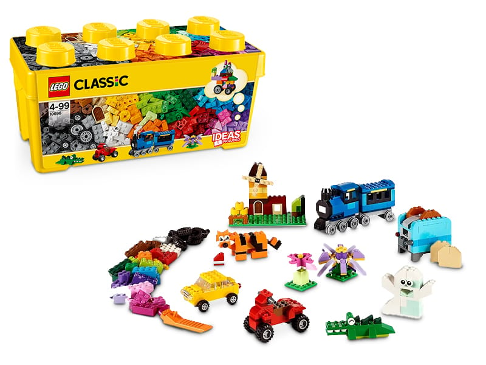

LEGO Classic
Manufacturer/Brand: The LEGO Group
Country of Origin: Denmark
Short History: The LEGO Group was founded in 1932 by Ole Kirk Christiansen, initially producing wooden toys. In 1949, the company began producing plastic building bricks. Later in 1958, LEGO patented its famous stud-and-tube interlocking system, which provides a strong connection between bricks. LEGO has since become one of the world's most recognised construction toy brands.
Category: Interlocking plastic construction blocks.
Age Range: Generally 4 years and above, depending on the set.
Materials: ABS (Acrylonitrile Butadiene Styrene) plastic for many traditional LEGO bricks.
Fun Facts: LEGO is an abbreviation of the Danish words "leg godt," which means "play well." LEGO bricks are manufactured with such precision that only 18 out of every million bricks produced do not meet the company's strict quality standards. LEGO bricks manufactured today can connect with compatible bricks produced decades ago.